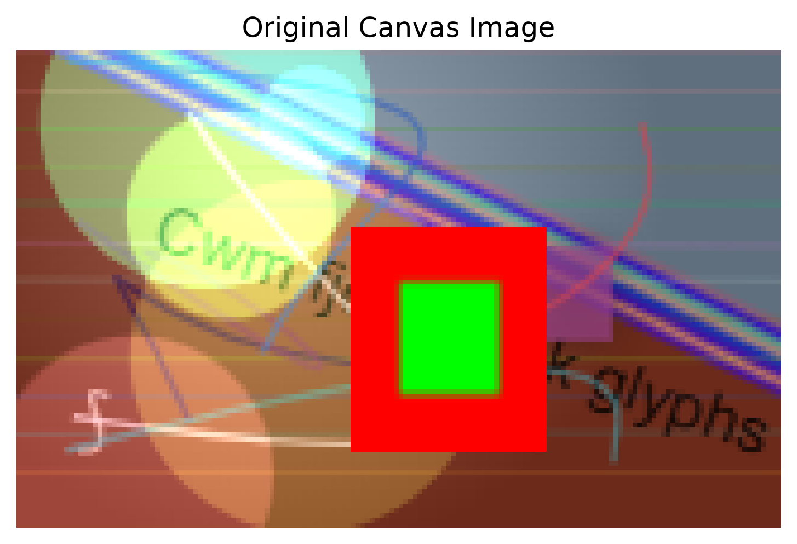
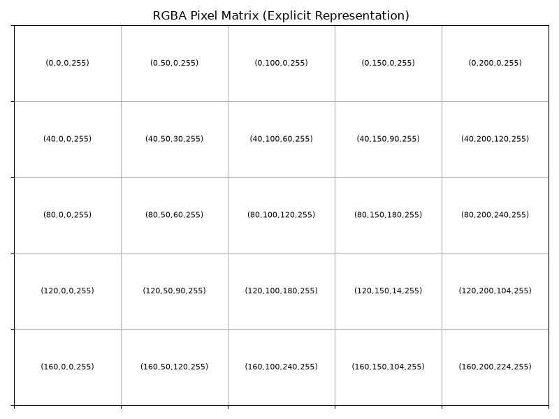
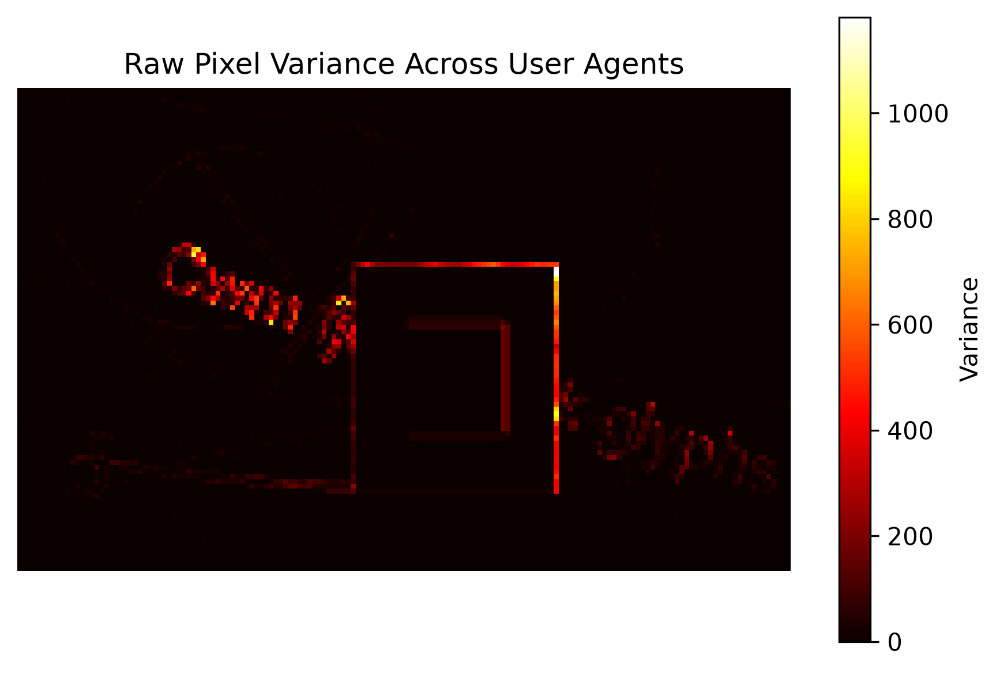
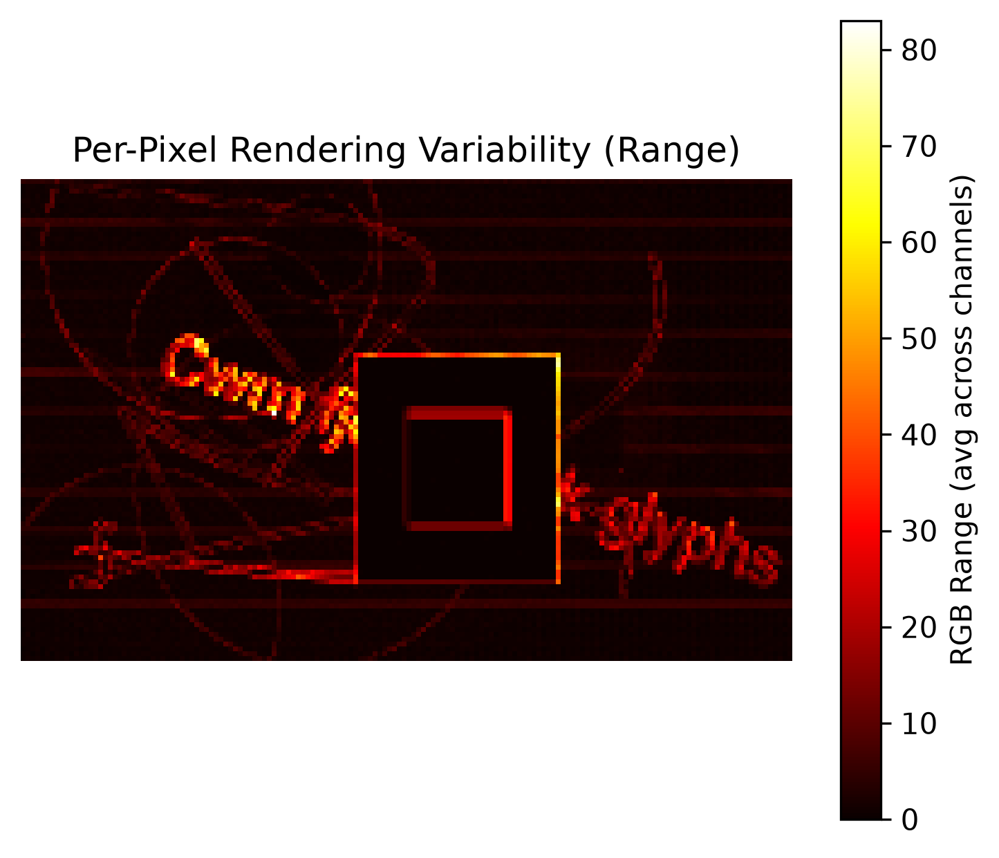

Baseline vs Numerical Representation


- The JavaScript Canvas API renders images from drawing commands. The image on the left is the canvas generated by your browser each time this page loads.
- Canvas rendering can be used for device fingerprinting because different devices and browsers produce small differences. The image may visually look the same, there are some positions with small differences (e.g., at coordinates x, y two devices may have RGBA values of (255, 0, 0, 255) vs (254, 0, 0, 255)).
- The image on the right shows how the canvas is internally represented as a matrix of RGBA (Red, Green, Blue, Alpha) pixel values.
High Variance Zones:

Pixel Intensity Variation (RGB Range):

Your Browser Fingerprint
This is data stored in your browser that enables websites to optimize your experience and sometimes reidentify you (like when you check "Remember this device"). The user agent is generally the most telling metric, but can be inconsistent and not discriminating enough at times. When combined with image rendering identification, it greatly improves device recognition accuracy.
Contribute Your Data
If you want to help improve data analysis, you can contribute your device/browsers rendering data. All that is collected is the image data and your user-agent, which is a publicly available string that websites commonly use to either identify you, or provide an optimized experience for your device. No personally identifiable information is collected.
By clicking Collect Data, you are sending your rendering data to a google firebase database to be recorded and analyzed.